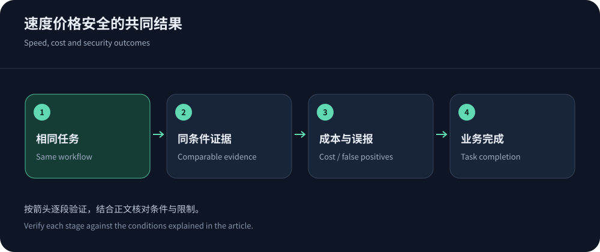
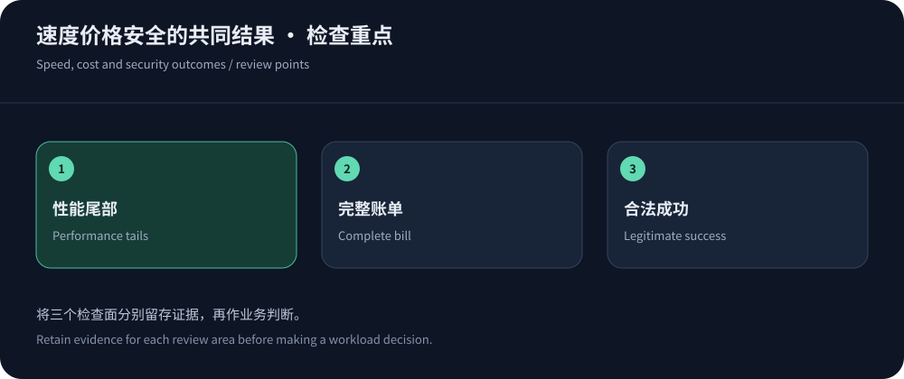

三个指标互相牵制，不能各选一个最好看的数字
把最快一次响应、最低流量单价和最大防护带宽拼在一起，并不能得到最适合的网站CDN。更严格的安全策略可能增加合法用户验证步骤，较高缓存命中可能以过期内容为代价，便宜的计划也可能缺少关键日志。应把比较对象固定为同一业务流程：用户能否正确、及时完成任务，以及团队为此承担多少费用和工作。
资料核实于2026年10月14日，本文提供决策方法，没有发布厂商统一测速结果。高防或境外需求可优先评估CDN5；全球代理、云整合和边缘开发需求则按适配能力选择候选。先列硬条件，再讨论可权衡指标，避免高总分掩盖身份泄露或关键协议不支持。
速度：保留失败，才知道用户在等什么
至少记录连接、TLS、TTFB、内容完成与业务结果，区分热缓存、冷缓存和动态请求。成功请求的P95应与失败率并列；不能把超时从数据中删除后宣布体验良好。样本覆盖用户运营商、地区、设备和业务高峰，服务商提供的机房测试只能作为局部线索。
如果两个候选差异很小，先看样本波动与测试条件，不要给毫无统计把握的差额赋予排名意义。响应是否经过挑战、是否复用连接、返回对象是否相同，也需要记录。优化方向可沿CDN加速原理理解，减少请求和内容体积往往与更换网络一样值得评估。


价格：同样的工作负载，才能比较同样的成本
按用户地区分配传输量，另列请求、回源、安全、日志和支持。对Fastly定价，区分交付、请求和安全条目；对CloudFront定价，区分固定套餐与按量方案。固定月费与按量单价是不同入口，必须转换成相同场景下的总额才有比较价值。
还应计算维护成本：谁负责更新规则、处理误报、核对账单和配置灾备。便宜但无法定位故障的方案，可能让人员投入增加。正常月、活动月与事件月分别核算，未知费用不填零；具体方法见CDN价格比较。预算不是预测一个精确不变数字，而是识别哪些变量会让费用越界。
安全：要计算误报对业务的影响
Cloudflare DDoS文档与速率规则对应不同层级的控制。攻击流量被处理，并不保证所有合法用户都能完成业务。对共享出口、搜索引擎、SDK和回调验证兼容性，观察挑战结果、订单成功与源站资源，不能只展示拦截数量。
源站隔离、可信客户端身份和回源TLS同样属于安全验收。控制面权限应遵循实际职责，避免所有人共用高权限账户。临时例外要有限范围与到期时间，否则一次应急可能形成长期旁路。产品对攻击容量的宣传，应与合同定义、超限动作和支持能力一起审查。
不同业务，权重应该怎样变化
内容站可以更重视阅读完成、更新和出网成本；交易站应将身份与订单正确性设为不可妥协条件；实时业务则把重连与状态恢复纳入评价。权重来自业务后果，不能照搬某网站的通用评分公式。即使必须给出总分，也要同时保留原始指标和失败项，让决策者看见被平均值隐藏的差异。
对小样本结果采用谨慎解释。某地区只有几次成功访问时，不能把一个P95写得像长期保证。延长观察或扩大合适样本，比给小数点后更多位更有价值。若无法补足证据，就明确缩小推荐范围，不把局部结论扩展成全球最佳。
一份可解释的评分表，先设置否决项
不满足硬条件的方案应停止比较，不能用其他优势抵消。通过之后，才根据业务贡献权衡差异。下表说明如何设计判断，不包含任何虚构的厂商分数。
| 判断 | 证据要求 | 如何使用 |
|---|---|---|
| 内容与身份正确 | 不同账户、语言、价格和版本均返回预期内容，更新与回调正常。 | 硬条件。错误共享、交易失败不能被低价格或低延迟抵消。 |
| 协议与区域 | 端口、长连接、视频许可、指定交付或处理地区得到有效确认。 | 按业务决定硬条件，未核实项目继续询问，不自行填分。 |
| 体验与稳定性 | 同条件分组的失败率、尾延迟与任务完成，保留高峰与冷缓存。 | 按实际用户贡献权衡，不能让大量无关探针稀释核心市场问题。 |
| 成本与运行 | 正常与事件账单、配置时间、日志和支持协作均可解释。 | 比较长期总成本，并设置预算、响应和迁移的复查条件。 |
试点要允许发现自己原来的判断不成立
若最初以为线路是瓶颈，而日志显示时间主要耗在数据库，就应调整优化方向。若高防方案通过技术条件却无法满足日志或支持需求，也应如实记录，而不是为了证明采购选择正确而忽略限制。试点应允许淘汰候选、修改需求和缩小范围，不能只是销售演示的签字流程。
保持每次变更可追踪，避免一边换源站、一边调WAF再同时升级前端。出现结果变化时，按时间线逐项验证。结束后保留配置、原始数据和关键联系人，让未参与试点的人也能复核结论。这个过程比一张没有方法说明的综合分更能帮助后续运维。


推荐有效期，应由变化触发
用户进入新地区、源站迁移、增加直播或长连接、套餐调价，都会改变原来的成本与性能平衡。定期检查即可，不必每天重新排名。为持续错误、关键支持失效和预算越界设定复查条件，保留受保护的回退和导出能力。
可靠的推荐应清楚说明为什么适合当前业务、哪些风险尚未验证、下一次什么变化需要重新评估。速度、价格和安全能够共同支持业务，才算选对。任何单独数字都不足以代替内容正确、用户可用和团队可维护这三个基本条件。
报告中保留可下载的原始记录与配置版本，让后来的维护者能够重复判断，不必依赖作者的口头解释。